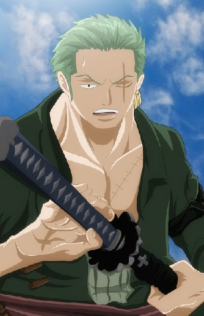

 원피스의 등장인물. 밀짚모자 일당의 전투원. 몽키 D. 루피의 첫번째 동료이면서 해적단의 창립 동업자. 세계 최강의 검사 '매의 눈' 쥬라큘 미호크를 뛰어넘어 세계 제일의 대검호가 되는 것이 꿈이자 목표인 삼도류(三刀流)의 검사다. [47] 밀짚모자 일당에 들어오기 이전부터 이미 이스트 블루에서 '해적 사냥꾼'으로 악명을 떨치고 있었다. 대외적으로는 밀짚모자 일당의 2인자로 여겨지고 있으며 일당의 선원들 중에서는 선장 루피와 함께 최악의 세대에 이름을 올린 유일한 인물이면서 일당의 기강이 흔들린다고 생각하면 칼을 빼들고 기합을 넣는 군기반장이기도 하다.